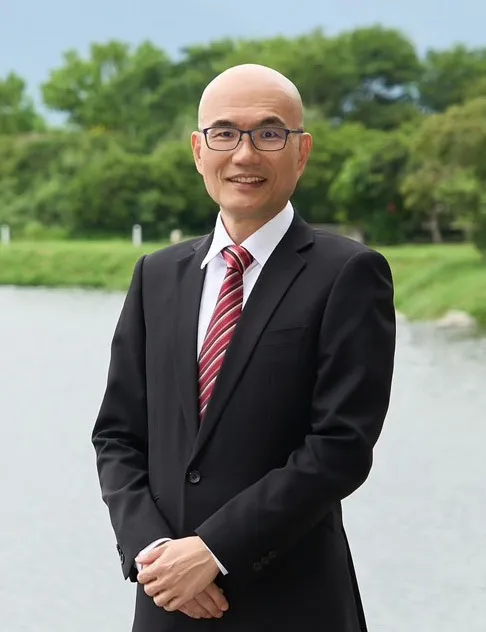
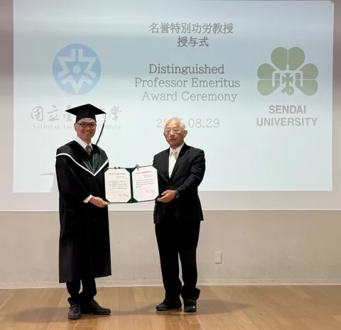

Advisor
指導教授

鄭憲宗
Professor · Advisor
- 電話 06-275-7575 ext 62520#2607
- Email stevecheng1688@gmail.com
- 實驗室 塵間感知與雲端計算實驗室
Research Fields
專長及研究領域
資訊安全
網路安全
人工智慧
量子電腦
無線通訊
行動計算
數位生活科技
電腦網路
機器學習
Education
重要學歷
- 1995 · 美國馬里蘭大學 計算機科學博士
Ph.D., Dept. of Computer Science, University of Maryland, College Park, U.S.A. - 1993 · 美國馬里蘭大學 計算機科學碩士
M.S., Dept. of Computer Science, University of Maryland, College Park, U.S.A. - 1987 · 國立台灣大學 電機工程碩士
M.S., Dept. of Electrical Engineering, National Taiwan University, R.O.C. - 1985 · 國立台灣大學 電機工程學士
B.S., Dept. of Electrical Engineering, National Taiwan University, R.O.C.
Experience
重要經歷
- 國立臺東大學 · 校長 (2024 ~ now)
- 朝陽科技大學 · 講座教授 (2021 ~ now)
- 台灣野村總研諮詢顧問股份有限公司 · 「115年在宅醫療照護資訊平台規劃及專業技術服務案」計畫研究諮詢 (2026 ~ now)
- 台灣野村總研諮詢顧問股份有限公司 · 「通訊網路異質備援韌性評估與策略研究」計畫顧問 (2026 ~ now)
- 數位發展部數位產業署 · DIGITAL+數位創新補助平台計畫審查委員 (2023 ~ now)
- A special issue of Mathematics · Special Issue Editor (2022 ~ now)
- 科技部 · 資訊工程學門召集人 (2019 ~ 2021)
- 國立台北護理健康大學 · 健康科技學院院長遴選委員 (2021)
- 中國工程師學會 · 教育委員會委員 (2021 ~ now)
- 國家實驗研究院 · 科技政策研究與資料中心專家代表 (2021 ~ now)
- 國家實驗研究院 · 人工智慧產學研聯盟諮詢專家 (2021 ~ now)
- 中國電機工程學會 · Editor (2017 ~ now)
- International Journal of Electrical and Engineering · Editor (2012 ~ now)
- IEEE Tainan Section · 理事 (2009 ~ now)
- 台南軟體協會 · 理事 (2009 ~ now)
- 國立成功大學 · 資訊工程學系(所) 教授 (2004 ~ now)
- 國科會 · 科學報導 Guest Editor (2011)
- 國立成功大學 · 資訊工程學系(所) 系主任 (2009 ~ 2012)
- IEEE ComSoc Tainan Sector · Vice chair (2009 ~ 2012)
- 美國華盛頓大學西雅圖分校 · 電機工程學系訪問學者 (2007 ~ 2008)
- 資訊工業策進會 · 創新前瞻技術規劃委員會規劃委員 (2005 ~ 2008)
- 國科會 · 推動自由軟體研發計畫諮詢委員 (2004 ~ 2008)
- 資訊工業策進會 · 產學研合作委員會委員 (2004 ~ 2008)
- 國立成功大學 · 資訊工程學系(所) 副教授 (1999 ~ 2004)
- 國立成功大學 · 資訊工程學系(所) 助理教授 (1997 ~ 1999)
- 國立東華大學 · 資訊工程學系(所) 副教授 (1996 ~ 1997)
Honors & Awards
榮譽與獎勵
- 獲「ECEI 2026 BEST CONFERENCE PAPER AWARD」、「SEGE 2025 BEST PRESENTATION」、「ECEI 2025 BEST CONFERENCE PAPER AWARD」、「EAI SGIoT 2023 Best Paper Award」、「ICS 2020 Best Paper Award」等國際會議最佳論文獎
- 2025 年 8 月獲
日本仙台大學名譽特別功勞教授

- 2019–2025 年連續 7 年上榜美國史丹佛大學公布之全球前 2% 頂尖科學家（World's Top 2% Scientists）「終身科學影響力」榜單
- 2024 年指導碩士班學生參加「AICUP 2024 根據區域微氣候資料預測發電量競賽」，獲佳作
- 2024 年指導專題生參加「國立成功大學資訊工程學系大學部 114 級畢業專題展」，獲第三名
- 2024 年指導碩士班學生參加「台積電校園黑客松」，獲廠務知識機器人組第一名
- 2020 年獲國立成功大學 108 學年度教學優良教師
- 2018 年獲國防部與科技部合頒「優質計畫」獎座
- 2007 年教育部 95 學年度大學院校前瞻晶體系統設計相關競賽 嵌入式軟體製作競賽軟硬體整合組優等
- 2005 年榮獲 2005 資深優良教師
- 2005 年成立成大電機資訊學院量子計算研究中心團隊，並擔任中心副主任
- 2004 年無線行動夢想家競賽之 Intel 金質獎
- 2004 年行動創意大賽銅牌獎
- 2003 年教育部嵌入式軟體競賽優等獎
- 2002 年指導碩士班與大學生參加「無線行動夢想家」全國競賽，獲佳作
- 2002 年李國鼎科技研究獎
- 2002 年受聘為資策會多媒體實驗室技術顧問
- 2001 年資策會與中華民國資訊學會第一屆「手持式資訊家電產品應用程式開發暨應用創意大賽」榮獲第一名
- 2000 年教育部 89 學年度大專院校通訊科技專題競賽優等獎
- 1999 年指導碩士班學生鄭燁禧榮獲 1999 年宏碁龍騰論文獎佳作
- 1996 年受聘為教育部「85 年度暑期研訪企業」教師，前往工業技術研究院協助企業界解決問題
- 1995 年接受美國 Honeywell Inc. (Minneapolis 總部) 邀請，對個人博士論文作專題演講
- 國科會甲等研究獎
- 國立成功大學創新育成中心技術審查委員
- 資策會「通訊軟體關鍵技術開發五年計畫」技術顧問